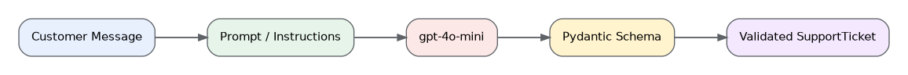

Convert an unstructured support message into a validated Python object.
Fast Memory Flow

What I Built
I used gpt-4o-mini with a Pydantic schema to classify support tickets into category, priority, and summary fields. The model returns a validated Python object that downstream systems can use safely.
Think Summary
Why is a validated Pydantic object safer than plain-text JSON?
Pydantic validates required fields and allowed values.
The application receives a typed object instead of parsing unpredictable text.
Validation failures are visible and can be handled explicitly.
Interview Q&A
What is structured output?
Structured output constrains the model response to a defined schema, such as a Pydantic model.
Why use Pydantic?
Pydantic validates field names, data types, and allowed values before downstream code uses the result.
What is the role of the prompt?
The prompt defines the task and business rules, while the schema defines the expected response structure.
30-Second Interview Answer
I used gpt-4o-mini with a Pydantic schema to classify support tickets into category, priority, and summary fields. The model returns a validated Python object that downstream systems can use safely.
One-Line Résumé Description
Built a structured-output support-ticket classifier using LangChain, gpt-4o-mini, and Pydantic.
Read-Aloud Practice
What I built
I used gpt-4o-mini with a Pydantic schema to classify support tickets into category, priority, and summary fields. The model returns a validated Python object that downstream systems can use safely.
What is structured output?
Structured output constrains the model response to a defined schema, such as a Pydantic model.
Why use Pydantic?
Pydantic validates field names, data types, and allowed values before downstream code uses the result.
What is the role of the prompt?
The prompt defines the task and business rules, while the schema defines the expected response structure.
Résumé description
Built a structured-output support-ticket classifier using LangChain, gpt-4o-mini, and Pydantic.